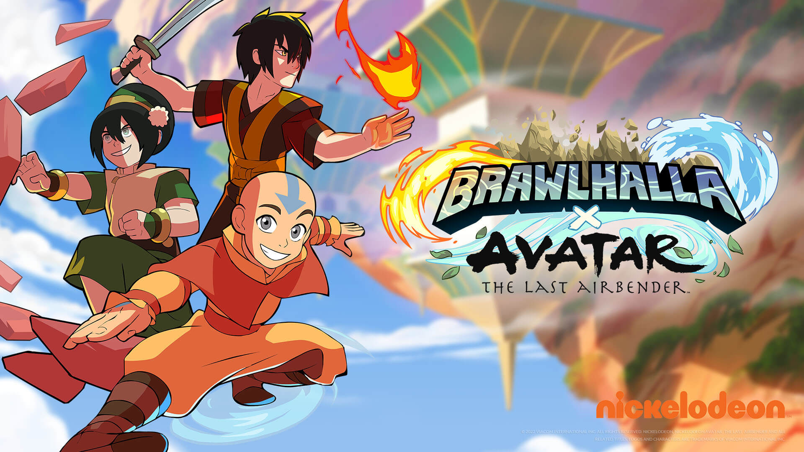
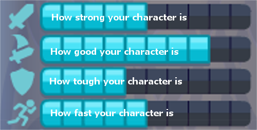
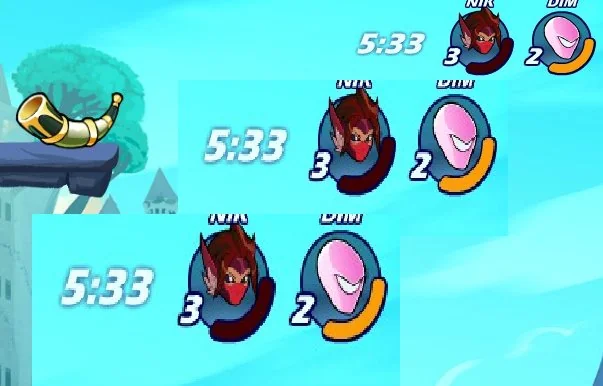
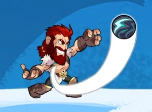
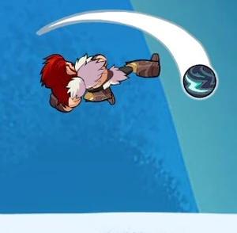
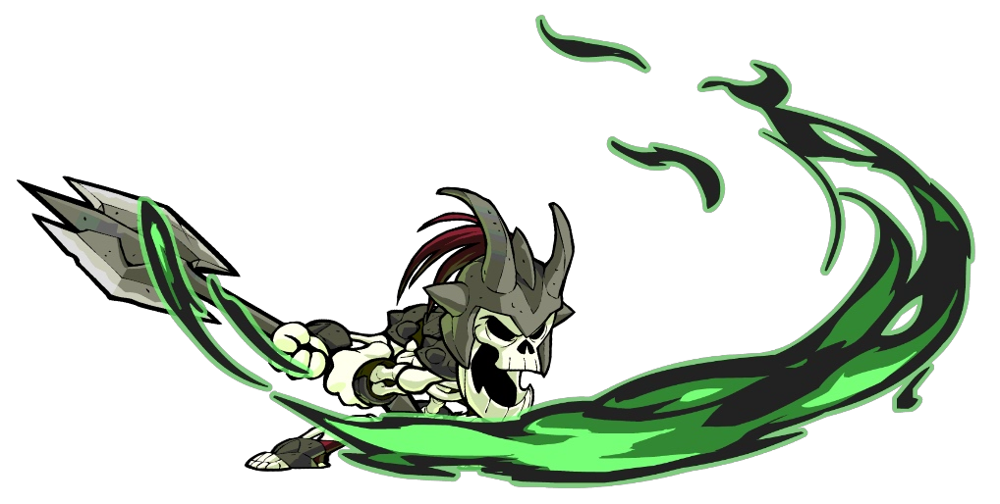

Brawlhalla
uhadvbwhjvahbv fhbwvsjfhjwbvbfhjvbjhfbwjhfbjsbfhjsvb
jbfwhfghwfhjsgfhjwhfjwhjfdhwjfhjevbfhjejfbjehfjv

Приветствую тебя в этом гайде по игре Brawllhala!
Этот гайд поможет тебе узнать игру лучше, усовершенствовать геймплей, и научат всему, что нужно знать в Brawlhalla.
Этот гайд будет поделен на три части, это его первая часть.
И так, начнём!

Каждая легенда(персонаж) имеет по 2 два оружия, 6 уникальных сильных атак,
по 3 на каждое оружие, и 4 статы:
Сила - влияет на то, какой урон ты наносишь и на силу отскока от твоих ударов.
Ловкость - влияет на то, насколько быстро ты сможешь делать удары.
Защита - влияет на то, сколько ты получаешь урона и насколько далеко ты
отлетаешь после ударов (чем больше защиты - тем меньше времени полёта)
Скорость - влияет на скорость передвижения на земле, в воздухе, а также на
ускорение на земле и в воздухе.

Свои хп и противника можно увидетьв правом верхнем углу в самой игре.
Обычно, каждый игрок начинает с 3 стоками (жизнями).
Стоки указывают на общее количество жизней.
Цвет стока указывает на то, насколько далеко ты улетишь после того как
будешь ударен.
Когда у одного из игроков заканчиваются стоки - игра окончена.

В Brawlhalla всего 3 типа ударов.
1. Лёгкие атаки на земле: нейтральная лёгкая атака, боковая лёгкая атака и
нижняя лёгкая атака.
То же самое только на английском, потому что в будущем будет удобней
понимать всё на английском:
Grounded light attacks: neutral light attack (nLight), side light attack (sLight) и
down light attack (dLight)

2. Лёгкие атаки в воздухе: нейтральный удар в воздухе, боковой удар в
воздухе, нижний удар в воздухе, рекавери и граундпаунд.
На английском:
Air light attacks: neutral air(nAir), side air(sAir), down air(dAir),
Recovery (REC) и Ground pound (GP)
Чтобы сделать лёгкие атаки в воздухе, вам нужно будет делать тоже самое что и
с лёгкими атаками на земле, только в воздухе.

3. И наконец сигнатуры(сильные атаки):
Сигнатуры: Нейтральная сильная атака, боковая сильная атака и нижняя
сильная атака.
На английском:
Signatures: neutral signature(nSig), side signature(sSig),
down signature(dSig).
Нажав накнопку броска оружия, ты можешь выбросить его.
Броски оружиянаносят небольшой урон и могут быть использованы в
ситуациях, когда нужно быстропрервать действияпротивника.
До встречи в следующем гайде!